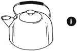
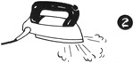
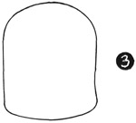
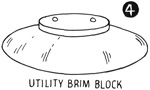

1952—How to Make Hats
by Ruby Carnahan
Equipment Needed
STEAMER
Steam is required for every type of hat made. An electric steamer made especially for Millinery is very desirable, however a teakettle with a steam spout does very well (Illus. I).
IRON
A plain iron may be used with a damp cloth to steam press. A steam iron is used extensively by many for steam pressing (Illus. 2). Steam irons become coated with lime, often making them almost useless, unless they are cleaned by putting 1/4 cup of vinegar and 1/2 cup of water in iron and letting it steam through iron. Then pour out and put in a cup of vinegar and let iron stand for a while to remove all the lime deposit. Pour off and fill your iron with distilled water, ready for use.
UTILITY HEAD BLOCK
Utility head block No. 796 (Illus. 3) in your headsize is necessary for steaming and blocking crowns. If you intend to make hats for others, it will be necessary to have the headblocks in sizes and half sizes from 21 to 23 inclusive.
UTILITY BRIM BLOCK
The most practical brim block to have is Utility Brim Block No. 1514x (Illus. 4) in the 6" brim. This block may be had in a 4" brim also. One side of the brim block is flat for blocking flat brims, the other side of block is curved for blocking Bretons or for a mushroom brim. Head band block on this brim block is movable (Illus. 5), making it possible for the headsize to be changed to any size, by applying correct headsize band block on brim. Order brim block in your correct headsize.
HEADBAND BLOCKS
Headband blocks may be had in all headsizes.
MAKING YOUR OWN BLOCK
Use a ready-made frame, or a frame you have made, reinforced with frame wire around brim edge and headsize, also reinforce the brim front, back and sides with wire braces. Have all wiring on under side of blocking side. When frame has been satisfactorily reinforced with wire, paint frame with a preparation called U-Block-lt and let frame dry. Then proceed to block over frame just as you would block over a wooden block, using push pins, etc. Frames prepared in this manner cannot be used near heat or a flame (this warning is printed on the can of U-Block-lt). Dip the felt in hot water and roll in a towel to wring dry, then place the felt over the block and stretch and smooth felt, pinning as you stretch. Allow felt to dry on block. You will find this method of using hot water on felt will be just as satisfactory as if felt were wrapped in a damp towel for several hours and then steamed and stretched on block.